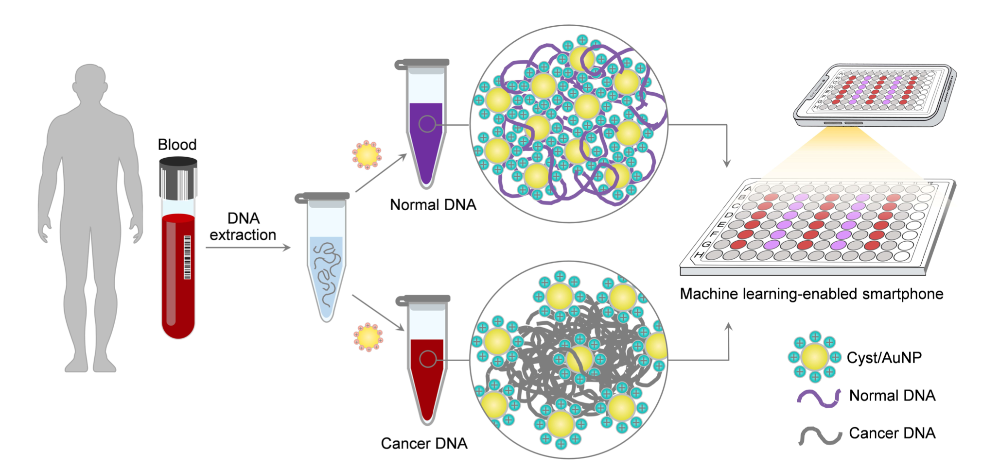

Rapid Multi-Cancer Early Detection Using Gold Nanoparticles and Machine Learning-Enabled Smartphone

Abstract

DNA methylation is an epigenetic modification that occurs when a methyl group is added to the fifth carbon atom of a cytosine (C) residue, forming 5-methylcytosine (5-mC). Cancer genomes exhibit a distinct methylation landscape (Methylscape), which has been discovered to be a characteristic of the majority of cancer types, implying that it could be used as a universal cancer biomarker. Using cysteamine decorated gold nanoparticles (Cyst/AuNPs), this study successfully developed a simple, low cost, and straightforward sensing platform for Methylscape detection. The sensing principle is based on the methylation dependent solvation of DNA in solution. Normal and cancer DNAs have distinct methylation profiles; thus, they can be distinguished by observing how Cyst/AuNPs adsorbed on these DNA aggregates disperse in MgCl2 solution. After opimizing the MgCl2 , Cyst/AuNPs, DNA concentration, and incubation time, the optimized conditions were used to distinguish methylated and unmethylated DNA as a simple model of Methylscape detection, and the sensing performance was demonstrated by comparing the dispersion of Cyst/AuNPs absorbed on DNA agglomerating in the MgCl2 solution. By comparing the relative absorbance (∆A650/525), it is possible to successfully distinguish methylated and unmethylated DNA. Additionally, this sensor demonstrated effective leukemia screening with high sensitivity and accuracy in real blood samples. To further simplify cancer screening, a smartphone assisted by machine learning was used to interpret the AuNP solution color, achieving a 90% accuracy in diagnosing leukemia. The developed sensor can be applied not only for leukemia screening, but also for the early diagnosis of other epigenetic related cancers. Our study paves the way for the development of a rapid universal cancer screening method that is well suited for screening large patient cohorts for detecting and treating cancer in its early stages.
The website template was borrowed from Michaël Gharbi.